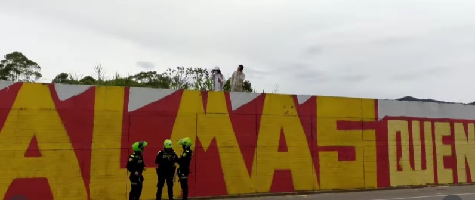
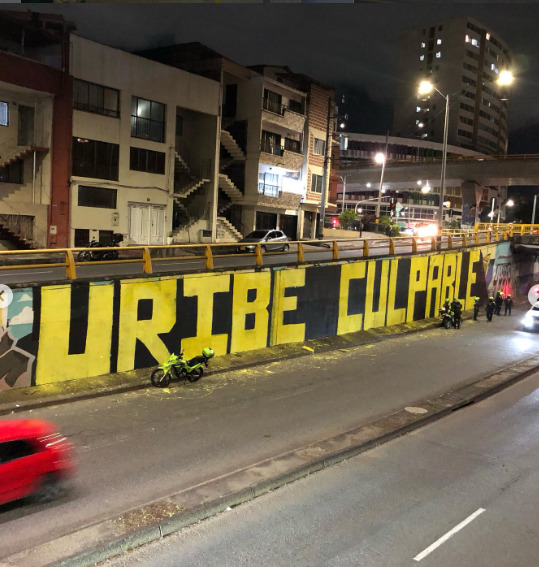
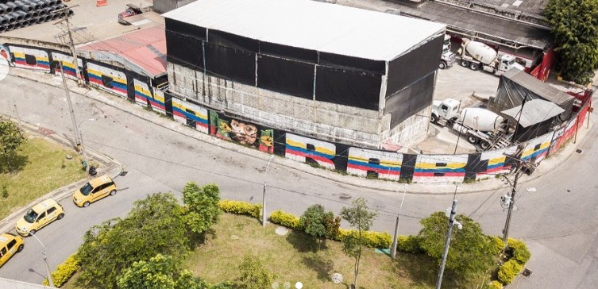

Medellín es una ciudad que habla a través de sus muros.
Cada graffiti contiene disputas políticas, memoria urbana y
resistencia.
Muchas de estas imágenes han desaparecido...
Algunas en horas, pero otras sobreviven como cicatrices en las paredes.
Este reportaje busca mostrar como ha sido la disputa entre el blanco y el color.
Pintar.
Blanquear.
Volver a pintar.
BLOQUE 1
Contra la pared: cuando el muro se vuelve campo de batalla
En el deprimido de la autopista Norte, cerca a la terminal de buses del norte de Medellín,
se pinto este mural, el primero con esta consigna que abrió el debate a nivel nacional.
Foto tomada de las redes sociales del colectivo Fuerza Graffiti
El primer muro no duró.
A finales de diciembre 2024, en la vía paralela, en el barrio Toscana, al norte de Medellín,
un colectivo de grafiteros escribió esta frase a lo largo de 30 metros: “Nos están matando”.
No era una consigna abstracta. Era una frase directa, sin metáforas, en un país donde los
líderes sociales siguen cayendo uno a uno.
Duró semanas. Hasta que lo borraron. El 8 de enero de 2025, una brigada oficial cubrió el
mensaje con pintura gris. La justificación fue simple: mantenimiento urbano, orden, estética.
“Un graffiti acorde a lo que representa el distrito de Medellín”, dijo entonces el concejal
Andrés “Gury” Rodríguez , por el partido Centro Democrático, quien sigue la línea política
del alcalde de la ciudad, Federico Gutiérrez.
Pero el muro no quedó en silencio. Al día siguiente, apareció otra frase: “El arte no se calla”.
Y tres días después, una que terminaría desbordando la ciudad: “Las cuchas tienen razón”.
Las redes sociales han sido campo de disputa por el significado que diferentes sectores
le dan a los graffitis en la ciudad.
PINTAR CONTRA EL BORRADO
El 13 de enero lo volvieron a borrar. Esta vez ya no era solo una frase. Era una acusación
directa en medio de los primeros hallazgos de restos óseos en La Escombrera, un lugar con un
marcado simbolismo de violencia y desapariciones misteriosas en la Comuna 13.
La respuesta institucional volvió a ser la misma: orden.
“Yo como alcalde tengo la responsabilidad de mantener la ciudad bonita y en orden”,
manifestó en rueda de prensa el alcalde Federico Gutiérrez.
Pero en la calle, la pregunta era otra: “¿El espacio público para quién?”, respondió una
vocera de Fuerza & Graffiti. “La ciudad no es una hacienda donde pueden decidir qué se
pinta y qué no”. Desde entonces, la misión de los colectivos de graffiti estuvo clara:
La alcaldía borra.
Volvemos a pintar.
Ellos vuelven a borrar.
Una secuencia que, lejos de apagar el mensaje, lo multiplicó. En menos de semanas,
“Las cuchas tienen razón” apareció en Bogotá, Cali, Pasto, Barranquilla, Soacha,
Neiva, Ibagué, Bucaramanga, Santander. El muro ya no era un lugar, era un símbolo de una
lucha que seguía igual de fresca que en 2021.

El propio expresidente Uribe fue autor material del blanqueamiento del mural más reciente. Foto
tomada de las redes sociales del colectivo Fuerza y Graffiti.
Esta lucha sigue vigente incluso un año y medio después de la gran polémica. En medio de un
ambiente de tensiones por la extrema polarización que está viviendo el país en época de elecciones
e incertidumbres, algunos artistas del colectivo Fuerza & Graffiti traspasaron sus fronteras Y
llevaron la expresión artística de protesta al Tablazo, en Rionegro, cerca a la residencia del
expresidente Álvaro Uribe Vélez.
Rionegro es una ciudad donde las expresiones de arte callejero no suelen tener gran visiblidad
a comparación de las de la capital de Antioquia o las de Bogotá; sin embargo, si tienen un impacto
diferente. Medellín representaba hogar para las víctimas y los colectivos artísticos; pero Rionegro,
el Tablazo, es territorio enemigo.
Y es que no es por exagerar. Pues en el momento en que los artistas de la juntada artística terminaron
el graffiti con el texto "7837 ALMAS QUE NO TE DEJARÁN DORMIR" empezaron a llegar las autoridades.
Primero fue la policía, pero luego llegó Álvaro Uribe en persona, iracundo y desencajado. Iba en sus
pintas de finquero y político retirado, pero llegó con rodillos y pintura blanca a "blanquear"
él mismo las letras en naranja y rojo chillón.
Hubo tumulto, agresiones verbales, discusiones, intentos de ejercicio de la fuerza oficial e intentos
de disuasión. "Esperamos que se retiren los artistas para proceder nosotros" fue el claro llamado del
ex-senador, centro de las polémicas principales relacionadas a los crímenes del programa de "Seguridad
Democrática" y adjudicado como principal responsable de la muerte de esas 7837 almas que clamaban los artistas.
Estos últimos, en una línea de defensa ante el mural, mantuvieron una protesta sentida en frente de Uribe y
su compañía de escoltas, aliados y amigos.
Incluso apareció Andrés "Gury" junto a David Toledo para intentar disuadir a los manifestantes y varias
pancartas de "Paloma y Oviedo a la presidencia" se ondearon por parte de los afiliados al Centro Democrático.
El caso muestra que la disputa por la memoria, la voz y las paredes sigue más viva que nunca.
Cartografía del arte político
EL ARTE QUE INCOMODA
Para quienes pintan, la discusión nunca fue estética. “El arte no es para decorar.
Si no incomoda, no es arte”, dijeron los voceros del colectivo Fuerza & Graffiti en
Noticias Uno. La frase se repite entre diferentes colectivos de artistas, sin embargo,
Fuerza & Graffiti es el grupo de graffiteros que ha estado tras las las pintas políticas
en las paredes más polémicas en la capital antioqueña en los últimos meses.
Comunicado y manifiesto sobre el movimiento de las Cuchas Tienen Razón,
tomado del Facebook de Fuerza y Graffiti – 01/2025. Búsqueda por defender
la expresión libre del arte urbano.
Su postura es clara: no negocian. “No tenemos relación con la Alcaldía.
No trabajamos para ellos. El graffiti es del pueblo y para el pueblo”, expresaron
en un comunicado abierto donde fijaron su posición. Pero esa autonomía tiene un costo:
No hay contratos.
No hay permisos.
No hay garantías.
“Nosotros hemos intervenido más de 30.000 metros cuadrados sin pedir permiso”, dicen desde el colectivo.
Y aun así, siguen.Porque, como lo plantea el investigador Ricardo Toledo, el conflicto no es solo legal,
es simbólico: “Cuando el Estado no representa las preocupaciones ciudadanas, el arte callejero cuestiona
ese monopolio del significado”.
Comunicado del mes de enero de 2025. Tomado del Facebook de Fuerza y Graffiti en el que se
aclara los nexos y vínculos nulos de la organización, enfatizando en su carácter independiente.
CENSURA, MEMORIA Y PODER
El caso no es aislado. El borrado de murales con contenido político se ha repetido en distintos
momentos y lugares. En Medellín, colectivos denuncian un patrón: los mensajes críticos son
eliminados con rapidez, mientras otros permanecen.
Organizaciones como la Fundación para la Libertad de Prensa (FLIP) han señalado posibles casos
de censura por postura ideológica como las que han ocurrido en Medellín.
Y no es solo una discusión local. Casos internacionales muestran el mismo mecanismo: borrar,
sancionar, controlar. En un artículo publicado por un conglomerado de universidades de París
llamado ‘Writing the History of Political Graffiti’ decían las autoridades: “We erase them,
we arrest graffiti artists and put them in prison … they make their own and start again every night.”

Graffiti borrado en menos de dos horas. Los artistas fueron detenidos y hostigados por oficiales.
Extraído del Facebook de Fuerza y Graffiti.
El graffiti político, por definición, es efímero. Pero esa fragilidad es también su fuerza: revela
el conflicto en tiempo real. Como lo expresó el Museo de Antioquia durante el mes de la disputa
por los muros.
“Cada mural es un grito, un susurro o una pregunta incómoda”. En ese sentido,
lo que está en juego no es solo un muro. Es la memoria.
El caso del mural del MOVICE (Movimiento Nacional de Víctimas de Crímenes de Estado)
—eliminado pese a denunciar desapariciones forzadas— incluso generó preocupación
internacional por libertad de expresión.
Borrar no es neutral. Borrar también es narrar.
ARCHIVO VISUAL
Muros blanquea'os
CENSURA
FUERZA Y GRAFFITI
CENSURA
El problema
La censura oficial de graffitis se recrudeció en 2021
por cuenta de las manifestaciones del estallido social.
AFECTADOS
Gráfico
Los lugares afectados y
su relevancia.
CENSURA
Deprimido Terminal del Norte
La disputa de poderes empezó
el 13 de enero de 2025
BORRADO
La discordia
El objeto de la discordia fue esta
imagen de Álvaro Uribe.
CENSURA
El inicio
Este fue el primer mural borrado
del estallido a finales de 2024
EN MENOS DE 2 HORAS
San Juan Con la 80
Los agentes llegaron mientras
se estaba haciendo y capturaron
a los artistas.
MEMORIA
Ni la memoria nos ve
Mural borrado en el Museo
Casa de la Memoria
PROTESTA
Una lucha constante
Luego de las búsquedas en la escombrera
se continuó la protesta.
EXPANSIÓN
Un movimiento nacional
Manifestanciones de "Las Cuchas
Tienen Razón" en más de 10 ciudades
del país.
LA CALLE COMO DISPUTA IDEOLÓGICA
Graffiti realizado sobre la avenida 80. Esta pieza es parte de la oleada de graffitis
con sentido artístico-político de Fuerza y Graffiti. Extraído del Facebook de Fuerza y Graffiti.
El conflicto escaló y varios políticos locales fueron señalados de participar directamente en
el borrado de murales. Desde el otro lado, las autoridades hablaron de “intervenciones politizadas”
e incluso sugirieron vínculos con agendas nacionales por parte de los colectivos de graffiti.
En medio de ese cruce, los artistas rechazan cualquier cooptación. “No hacemos esto por dinero.
Esto es memoria”, dijeron algunos de manera anónima en entrevistas para noticieros nacionales de
televisión.
La disputa ya no es solo por pintar o no pintar. Es por quién tiene derecho a contar la ciudad.

Mural realizado en el marco del estallido social de 2021. Aún el colectivo no se consideraba como
Fuerza y Graffiti, pero se aliaban con artistas para contar su verdad. Tomado del Instagram de Fuerza
y Graffiti.
LO QUE NO SE BORRA
Hay algo que el gris no alcanza a cubrir. Cada vez que un mural desaparece, algo queda: la foto,
el registro, la conversación, la réplica en otra pared.
Como en el caso del artista argentino Fernando Traverso en su obra urbana de
‘Las bicicletas de Rosario’, donde alguien escribió debajo de un esténcil borrado:
“¿Alguien vio la bicicleta que dejé aquí?”.
Lo que hace referencia a las 350 bicicletas pintadas una tras otra y que representan,
cada una, un desaparecido durante la dictadura militar de 1976.
En Medellín, la lógica es similar. Borran uno, aparecen diez. Porque en una ciudad atravesada
por la memoria, los muros no solo se pintan, se disputan. Y mientras haya alguien dispuesto
a volver con pintura, brocha y una frase incómoda, el conflicto seguirá ahí, visible, aunque
intenten cubrirlo. "Si tapan uno, pintamos mil”, es la
consigna del movimiento graffitero. Y lo repiten en videos que difunden por redes, en arengas,
en comunicados… por todos lados.
Deprimido de la Terminal del Norte. Este es el segundo graffiti que se realizó sobre ‘Las Cuchas’,
aún conservado. Extraído del Facebook de Fuerza y Graffiti.
BLOQUE 2
Borrar no es silenciar
Juan Mosquera Restrepo – Sílaba Editores
La censura es un mecanismo inquietante que parece dejar el silencio como la única vía sensata,
sin embargo en este espacio Juan Mosquera, comunicador social y periodista de la UPB que además
se ha desempeñado como guionista, columnista de opinión, cronista, editor y director en prensa,
radio, cine y televisión, hace una reflexión sobre la naturaleza del arte urbano y su verdadera
función más allá de la pared.
¿Hasta donde puede llegar un graffiti?
¿Cuál es el impacto de este grito que ocupa una pared entera en la identidad popular y colectiva?
Buscar la verdad con el aerosol es una causa noble, pero puede pecar de ingenua si no tiene en cuenta
el contexto que la permea. Para encontrar una “verdad para todos”, tiene que haber
un diálogo con todos y esto implica llegar a unos consensos y sentarse todos a la misma mesa para
resolver las diferencias y salir del ciclo de violencia del pinte y repinte de los muros de las ciudad.
Las Paredes Hablan - Censura en Medellín
BLOQUE 3
La lucha por el muro
Texto...
BLOQUE 4
El arte de no pedir permiso
¿Qué se hace cuando la calle es hogar, la pintura es familia,
el parche es ilegal, y se vive sin permiso?